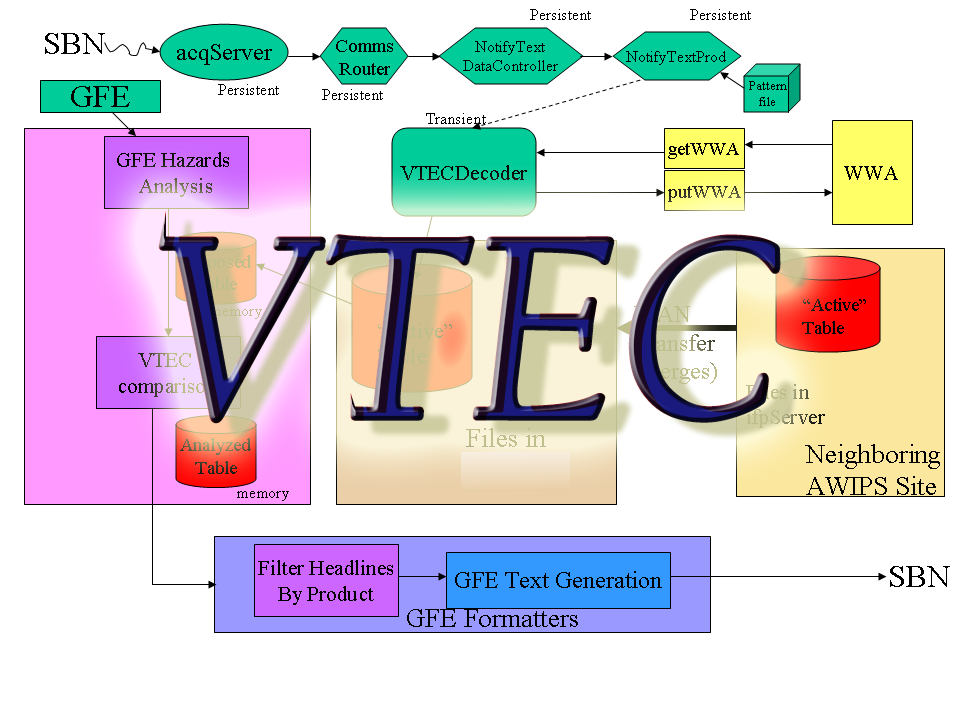

|
Base, Site, User Configuration Concept |
| Server Configuration - configuration of available weather elements, limits, databases, map backgrounds, site domains, resolutions | |
| GFE Configuration -
configuration
of appearance of user interface and weather elements
|
|
| Directory Structures | |
| Smart Initialization Configuration | |
| Intersite/Intrasite Coordination of Grids Configuration | |
|  |
VTEC
Configuration |
| Virtual
Weather Element Configuration |
|
| Log Files |